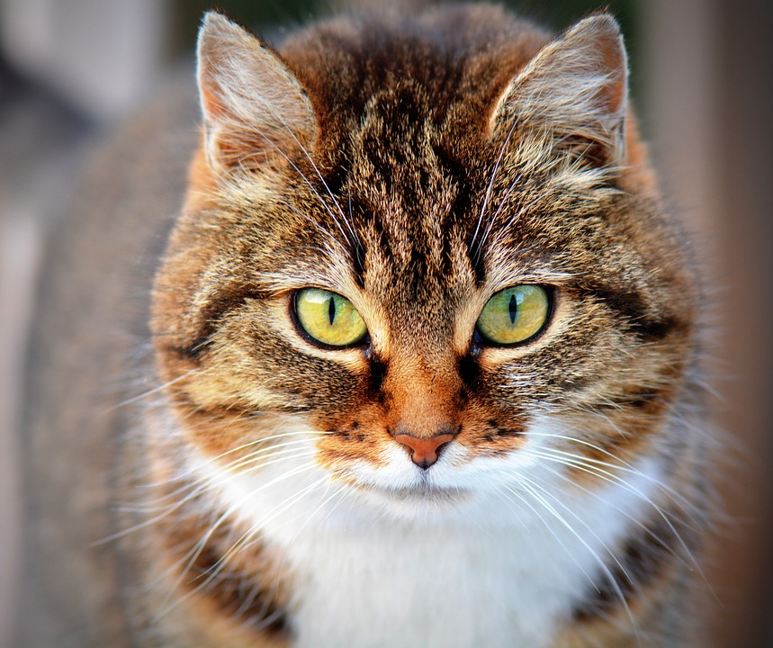
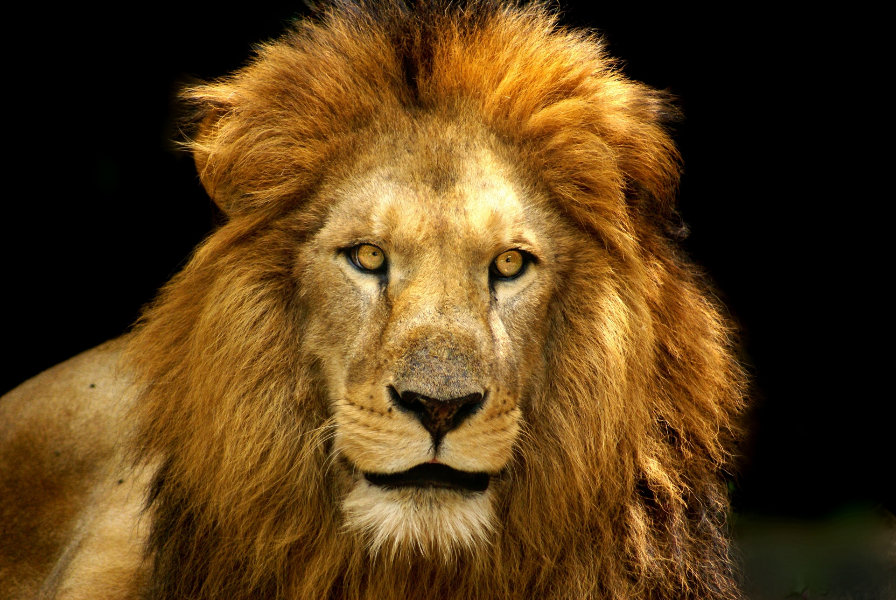
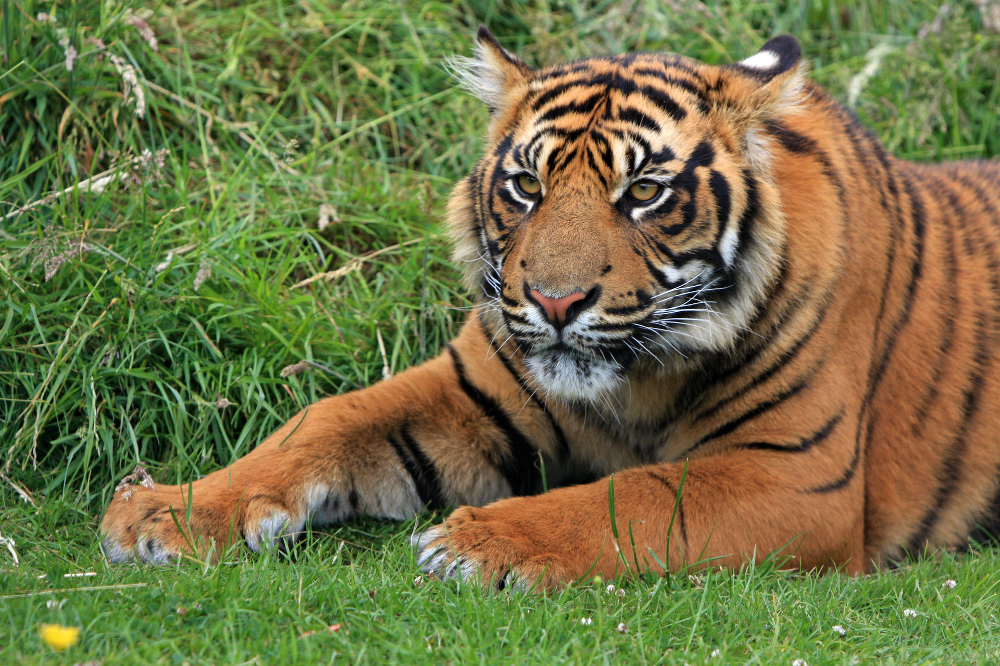
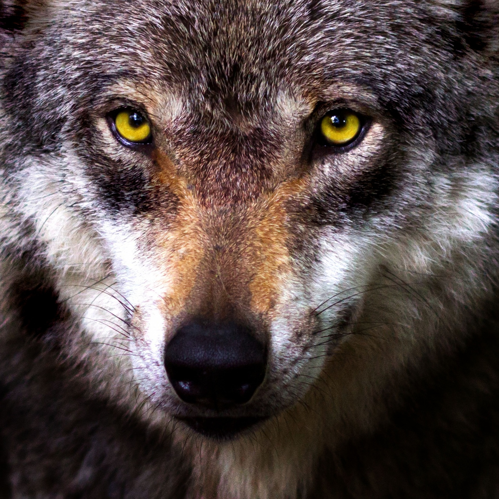

Animals
I love animals, from their playfulness to their loyalty towards their owners.
- Dog
I love dogs because they are adorable and extremely playful.

- Cat
Cats are my second favorite animal because of their sizes and cuteness.
 - Lion
I like lions, because they are fierce, and known as "king of the jungle".
 - Tiger
I like tigers because of their stripes, as well as their fierceness.
 - Wolf
I admire wolves, because they hunt in packs, which is really cool.
